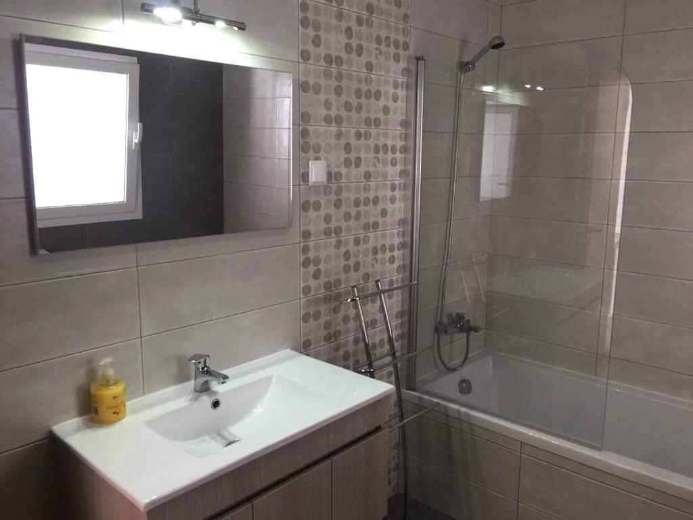
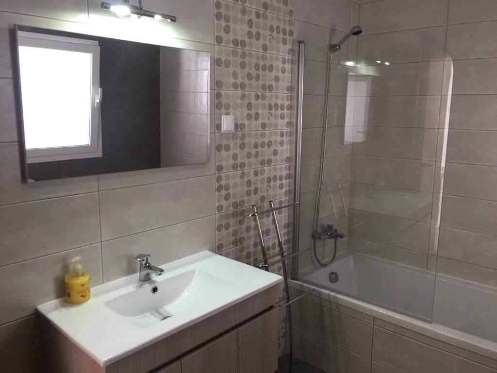
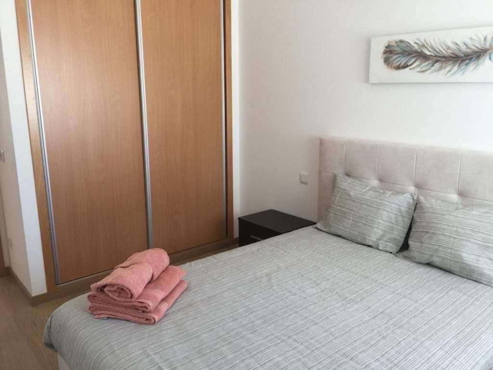
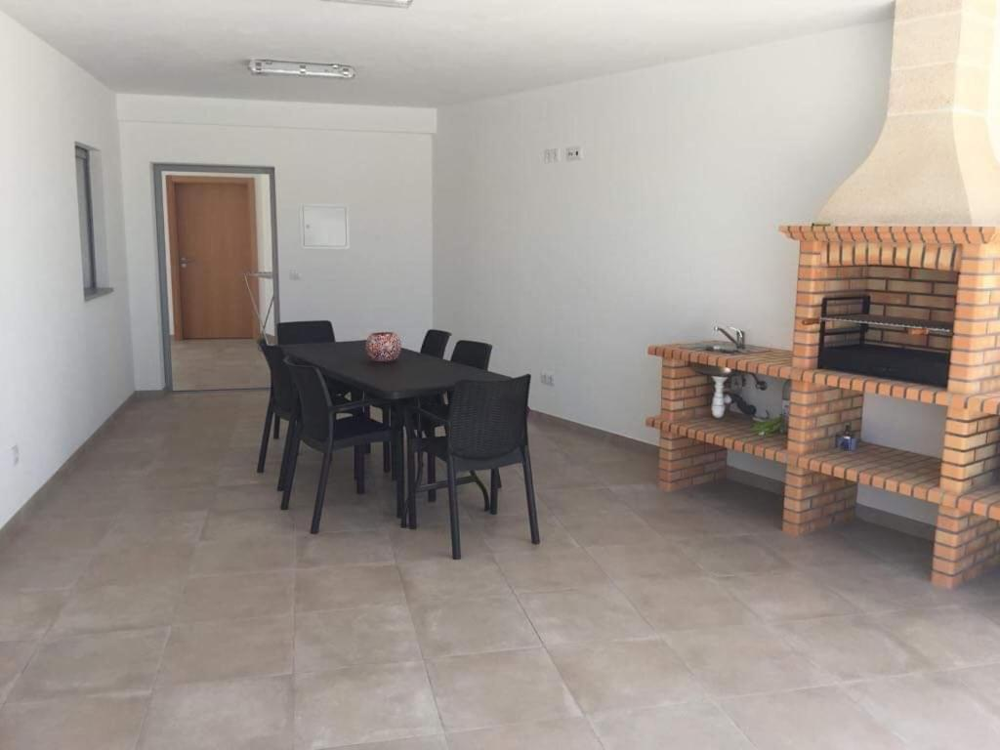
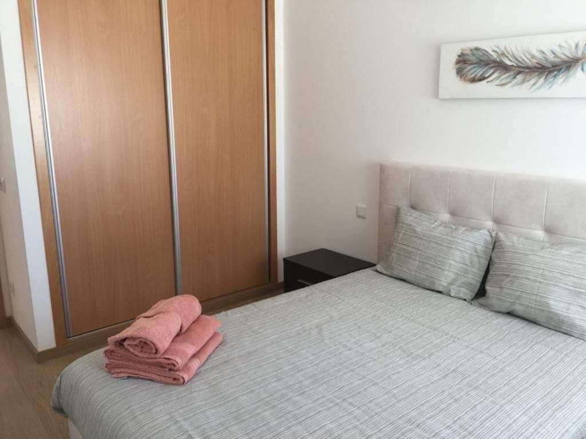
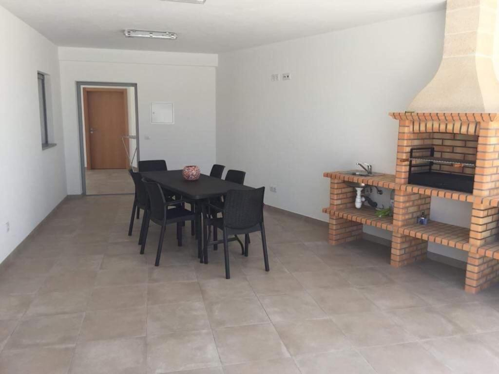
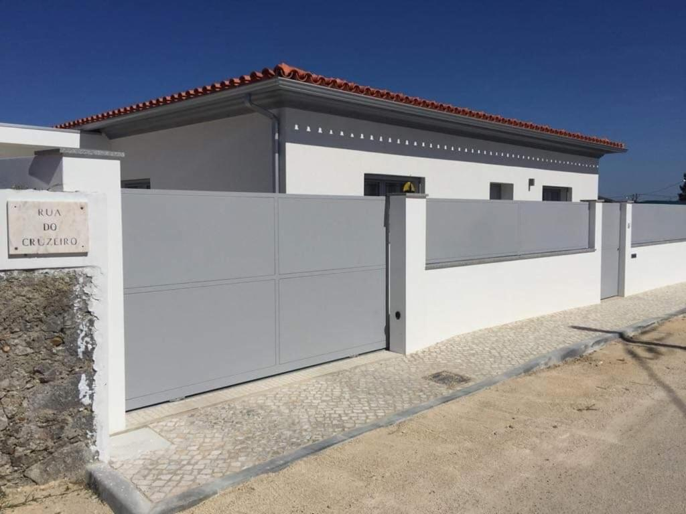
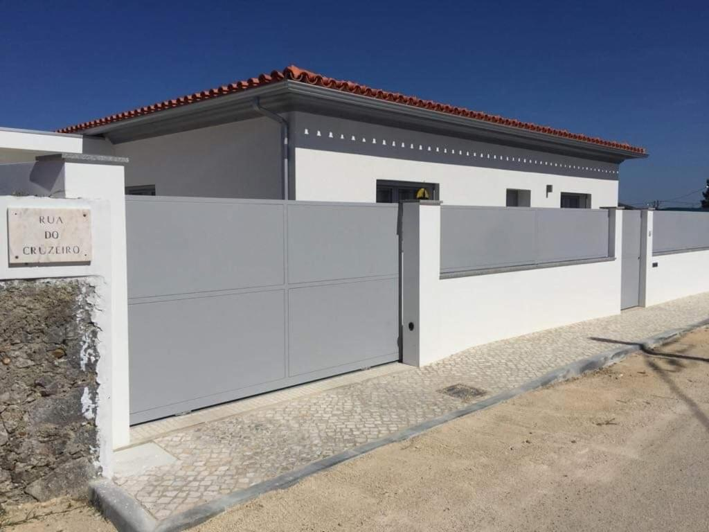

 



 


Com um jardim, uma piscina privada e vistas para o jardim, a Casa Luna está situada em Pataias. O alojamento fica a 27 km de Leiria e os hóspedes beneficiam de estacionamento privado no local e de acesso Wi-Fi gratuito. A casa de férias possui 2 quartos, 1 casa de banho, roupa de cama, toalhas, uma televisão de ecrã plano com canais por satélite, uma área de refeições, uma cozinha totalmente equipada e um pátio com vistas para a piscina. Há comodidades para churrascos e um terraço para banhos de sol na propriedade e os hóspedes podem andar de bicicleta nas proximidades. A Nazaré fica a 10 km da casa de férias, enquanto São Martinho do Porto está a 30 km da propriedade.